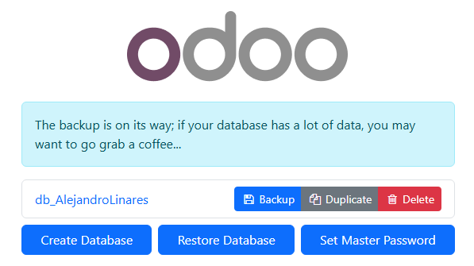

Sistema ERP de código abierto para gestión empresarial integral y administración de relaciones con clientes
Odoo constituye una solución integral de planificación de recursos empresariales (ERP) de código abierto que permite la gestión centralizada de los procesos críticos de una organización. Entre su arquitectura modular, el componente CRM (Customer Relationship Management) destaca por su capacidad para administrar eficientemente el ciclo de vida completo de las relaciones con clientes, trazabilidad de oportunidades comerciales y optimización del pipeline de ventas.
Esta documentación técnica está enfocada a profesionales y estudiantes del ámbito de sistemas informáticos que requieran implementar Odoo en entornos Windows, con particular énfasis en la configuración e integración del módulo CRM. A lo largo del presente informe, se detallará el proceso de instalación, parametrización inicial, configuración avanzada de CRM y los procedimientos recomendados para la salvaguarda de la información mediante copias de seguridad.
Nota técnica: La presente documentación se basa en Odoo 16 Community Edition, versión estable más reciente al momento de la implementación. Los procedimientos descritos podrían requerir adaptaciones en versiones posteriores del sistema.
Previo a la implementación, es necesario verificar que el entorno cumple con las siguientes especificaciones técnicas mínimas:
Para la implementación de Odoo en entornos Windows, utilizaremos el paquete de instalación oficial que integra todos los componentes necesarios (PostgreSQL como SGBD, entorno Python, dependencias, etc.).
Descarga el instalador desde el repositorio oficial:
Revisa el EULA (End User License Agreement), selecciona la opción "Acepto los términos del Acuerdo de Licencia" y continúa con el proceso mediante "Siguiente".
Configura el servidor de base de datos relacional que soportará el sistema:
Continúa el asistente mediante "Siguiente".
Define los parámetros básicos del servidor de aplicaciones:
Continúa mediante "Siguiente".
Especifica el directorio de instalación o acepta la ubicación predeterminada recomendada (habitualmente en Program Files) y avanza con "Siguiente".
Verifica la configuración global y confirma la instalación mediante "Instalar" para iniciar el despliegue de componentes.
Tras completar la implementación, selecciona "Finalizar". El sistema iniciará automáticamente el servicio de Odoo, permitiendo acceder mediante navegador web a la interfaz de administración: http://localhost:8069.
Nota técnica: En caso de errores durante la instalación, consultar los logs de eventos en %ProgramData%\Odoo\server para diagnóstico avanzado. Verificar también conflictos de puertos y permisos de sistema.
Desde el panel de administración de Odoo, accede a “Aplicaciones” y busca los módulos “CRM” y “Website”. Haz clic en instalar en ambos. Si no aparecen, usa el botón de “Actualizar lista de aplicaciones”.
Una vez instalados los componentes, configura la integración para automatizar la captura de oportunidades comerciales desde el sitio web:
La arquitectura integrada entre CRM y Website proporciona un ecosistema completo para el ciclo de adquisición y conversión de clientes:
Implementación práctica para empresa de servicios de consultoría IT:
Odoo proporciona funcionalidades nativas para la generación de copias de seguridad desde su interfaz de administración de bases de datos. Para implementar esta salvaguarda, siga el siguiente procedimiento:
Recomendación técnica: Almacene este archivo en ubicación segura, preferentemente en sistema de almacenamiento redundante o cloud con cifrado.
Interfaz del gestor de base de datos:
En caso de requerir la restauración de un backup previamente generado, el procedimiento se realiza igualmente desde la interfaz web de administración (/web/database/manager) mediante la función Restore.
La plataforma Odoo proporciona un framework completo para la implementación de sistemas ERP con alta integración entre componentes. La configuración avanzada del módulo CRM en conjunción con el portal web permite establecer una arquitectura completa para la gestión del ciclo de vida de clientes desde la captación hasta la conversión y fidelización. Los mecanismos nativos de backup garantizan la integridad de la información mediante procedimientos sistematizados de respaldo que pueden automatizarse para entornos de producción. Como evolución de esta implementación, se recomienda explorar las capacidades de integración con otros módulos como Facturación, Gestión de Proyectos e Inventario para obtener una solución ERP integral.